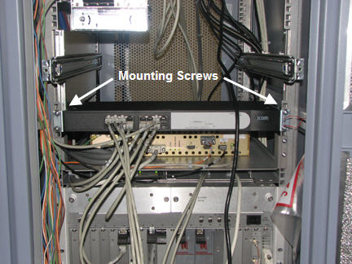
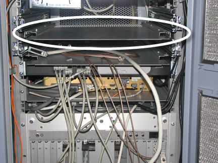

GE Exclusive Use Only
Direction 5500113, Rev# 3
Discovery MR750 3.0T Service Methods
Module Version 3.0, Version Date 8/13/10
GE Exclusive Use Only |
| Required Persons | Preliminary Reqs | Procedure | Finalization |
|---|---|---|---|
| 2 | 10 mins | 30 mins per ICN | 30 mins |
| Item | Qty | Effectivity | Part# | Manufacturer | |
|---|---|---|---|---|---|
| 4100 Option Catalog | 1 | DV Apps Systems | M7000JW | - | |
| ||||
| Electrocution Hazard! | ||||
| Dangerous voltages are present throughout the System Cabinet when Power is applied. | ||||
| Refer To OSHA lockout and tagout requirements. |
| ||||
| Possible personal injury! | ||||
| The 4170 ICN weighs approximately 40 lbs. and requires two people to lift it. | ||||
| ||||
| Follow the procedure mentioned below for removing power to ICN chassis. Failure to properly power down ICN’s may result in premature ICN failure. | ||||
| ||||
| Under NO circumstances should the ICN's be turned ON/OFF from the power button on the front. The ICN's have software running on disk drives that may become corrupted if not shut down properly. | ||||
Locate the ICN 4170 in the Power Gradient RF (PGR) system cabinet (see Illustration 1).
Illustration 1: ICN Location - 4170

| NOTE: | To open the PGR Cabinet, turn the key to the right. The cabinet handle will pop out. Turn the handle bar to the left and the cabinet door opens. |
Power down the host.
Perform LOTO for Reconstruction Equipment.
On the front panel of the ICN, loosen the thumbscrews on each side (see Illustration 2).
Illustration 2: ICN 4170 Thumbscrews

Slide out the ICN until the stop is reached at the end of the side rails.
Remove all the connections at the back of the ICN.
Illustration 3: Fiber Optic and Ethernet Switch Connections

| ||||
| Possible personal injury! | ||||
| The 4170 ICN weighs approximately 40 lbs. and requires two people to lift it. | ||||
Locate the two release tabs on the slide rails (see Illustration 4). Press both release tabs toward the center of the ICN while pulling the ICN forward until the rails release and the ICN is free. Place the ICN to the side in a safe area.
Illustration 4: ICN Slide Rails and Release Tabs

Loosen the network switch and slide it down to access mounting screws.
Illustration 5: Location of Mounting Screws

Locate and remove the four mounting screws for each side-mount bracket (see Illustration 6).
Illustration 6: Side-Mount Bracket Fasteners

Attach slide rails to mounting brackets using 3 screws each.
Locate placement for mounting bracket in the cabinet. Mount brackets for installation of ICN 4100 units (see Illustration 7). Make sure to orient the brackets with the slot on the bottom (see Illustration 8).
Illustration 7: ICN 4100 Side Mounting Brackets

Illustration 8: Mounting Brackets - Correct Orientation

Attach trays to mounting brackets as show below.
Illustration 9: Tray - Correct Orientation

Insert ICN 4100 units into the PGR cabinet. Slide the ICNs out until the stop is reached at the end of the slide rails. Make sure the release tabs engage and the ICNs are locked into the rails.
Connect all cables listed in Table 1. Illustration 10 shows the orientation of cables when looking at the rear of the ICN. Green indicates ports that should have cable inputs; red indicates ports that should NOT have cable inputs.
| NOTE: | Ethernet connection should go to Net MGT, Eth 2, Eth 3 ports. |
Table 1: ICN 4100 Wiring Matrix for Infiniband
| Connec tion Item | ICN 4170 | ICN 4100 | ||
| 32-Channel | 16-Channel | 32-Channel | 16-Channel | |
| Power Cords | 2 | 2 | 4 | 2 |
| Ethernet | 3 | 3 | 6 | 3 |
| Duplex - Fiber Optic | 2 | 1 | 2 | 1 |
| Single Fiber Optic | 2 | 1 | 2 | 1 |
| Infiniband - Jumper | N/A | N/A | 1 | N/A |
| Fiber Optic - Jumper | N/A | N/A | 1 | N/A |
Illustration 10: Cable - Correct Orientation

Illustration 11: Ethernet and Fiber Optic Connections

Press the release tabs and push the ICNs into the PGR cabinet until the ICNs are completely inside.
Tighten the thumbscrews on the front of the ICNs to secure.
Power on the host.
| NOTE: | For the first 3 or 4 minutes, LED's come on only at the rear of the ICN, next to the power cables. After 3-4 minutes, you will hear the ICN fans come on and then the LED at the front of the ICN starts flashing. |
Upon boot up, log in at root and invoke Guided Install.
Configure the new ICN (see VRE Reconfiguration).
Perform a test scan to ensure the system is working properly.